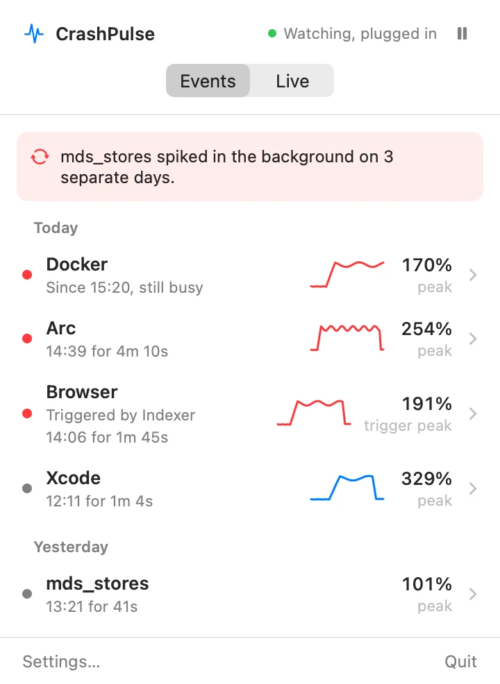

Every long CPU spike, kept
CrashPulse checks your Mac every few seconds. When an app keeps the processor busy for 30 seconds or more, it records an event with when it started, how long it lasted and how high it went.
Events are grouped by day, so you can look back at the fan noise from this morning or the battery drain from yesterday. An app that keeps doing it in the background on separate days gets called out at the top.
